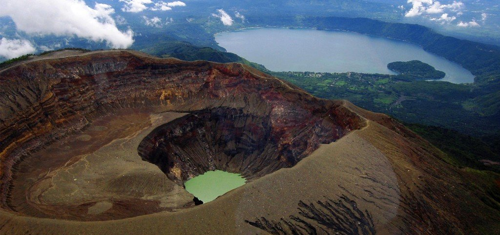
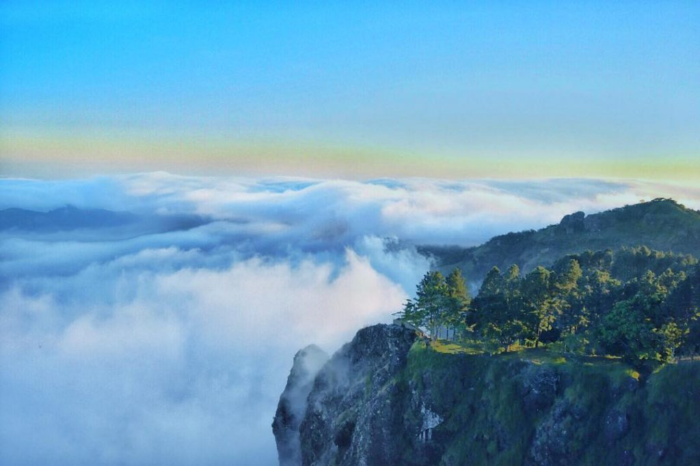
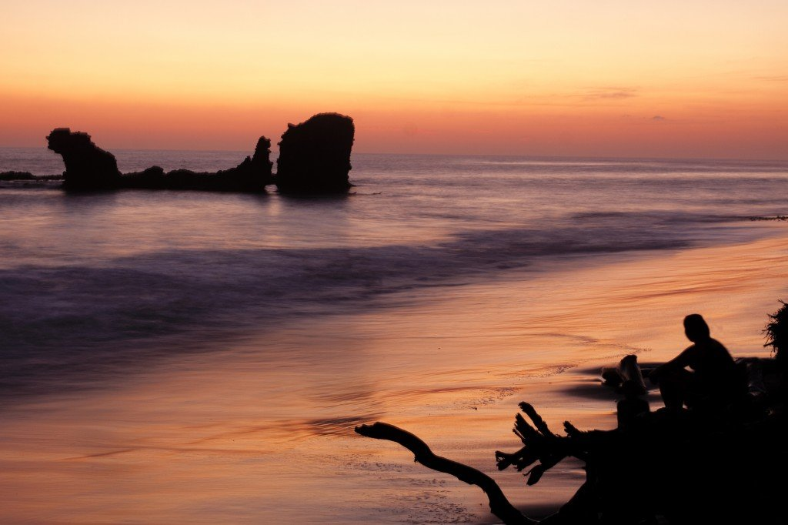
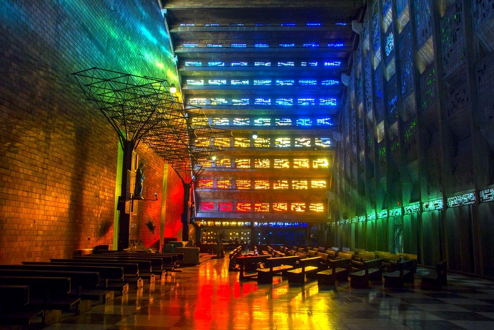
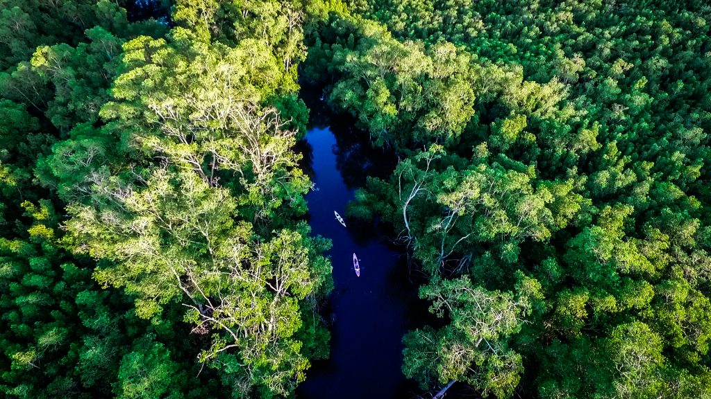

Volcán de Santa Ana o Ilamatepec
Su cumbre contiene cuatro cráteres reconocibles, superpuestos o nacidos dentro del cráter más antiguo, con una profundidad de 289 mts.
El cráter más antiguo del sistema de rupturas se encuentra a mayor altura y es conocido como "Plan de hoyos".
Más al norte y en la misma alineación le sigue el "Cerro el retiro" de 1460 m.s.n.m., un cono de escorias con tres cráteres bien marcados de los cuales el que se encuentra más al sur, llamado "El perol" está bien preservado.
Detalles
El cráter más antiguo del sistema de rupturas se encuentra a mayor altura y es conocido como "Plan de hoyos".
Más al norte y en la misma alineación le sigue el "Cerro el retiro" de 1460 m.s.n.m., un cono de escorias con tres cráteres bien marcados de los cuales el que se encuentra más al sur, llamado "El perol" está bien preservado.

La Puerta del Diablo
Si eres amante de las vistas espectaculares y los deportes extremos este lugar es para ti, ven y disfruta de los más impresionantes paisajes junto a un clima frío donde la adrenalina no puede faltar. Por qué se llama la Puerta del Diablo? Entre tantas versiones cuentan los pobladores que el antiguo dueño de estos terrenos bloqueaba el acceso a sus tierras con una puerta gigante de hierro, dicen que una vez pasó tan largo tiempo en el que nadie, incluso el dueño, llego al lugar, dejando en el olvido tan bellos paisajes y la puerta a la suerte de los elementos.
Detalles

Playa El Tunco
A tan sólo 42 kilómetros de San Salvador, la playa El Tunco se ha convertido en una de los destinos preferidos de la Ruta Sol y Playa, en especial de los que disfrutan de la vida nocturna y las mejores olas para surfear.
Su característica imagen, una impresionante formación rocosa frente a una bocana y rodeada de surfistas de todas partes del mundo, es cada día más popular.La playa es muy conocida por sus fiestas todos los fines de semana, con música en vivo de diferentes géneros: desde conciertos de rock, reggae y salsa.
Detalles
Su característica imagen, una impresionante formación rocosa frente a una bocana y rodeada de surfistas de todas partes del mundo, es cada día más popular.La playa es muy conocida por sus fiestas todos los fines de semana, con música en vivo de diferentes géneros: desde conciertos de rock, reggae y salsa.

Iglesia El Rosario
Desde 1971, la iglesia El Rosario es un patrimonio religioso de los salvadoreños como una de las últimas iglesias construidas en la capital, que conserva un diseño arquitectónico moderno, enriquecido con influencia europea y única a nivel del continente. Ubicada frente al parque Libertad es una edificación que mide 24 metros de ancho y 80 de largo cuya forma es oval sin columnas, con 22 metros de altura. Inicialmente, este sitio sostuvo la histórica Iglesia Parroquial de San Salvador, cuyo constructor fue el presbítero y prócer de la independencia José Matías Delgado en el siglo XVIII.
Detalles

Bahía de Jiquilisco
Situada a 110 kilómetros aproximadamente desde San Salvador, es un área de manglares y bosques salados que son refugio de aves como garzas, gaviotas y otras, con más o menos 55 kilómetros de longitud, forma la península de San Juan del gozo, recibe aguas del río grande de san miguel y posee 7 islas principales que son Cumichín, Espíritu Santo, Tortuga, San Dionisio, San Sebastián, Samaria, El Arco, así como otras islas menores
Detalles